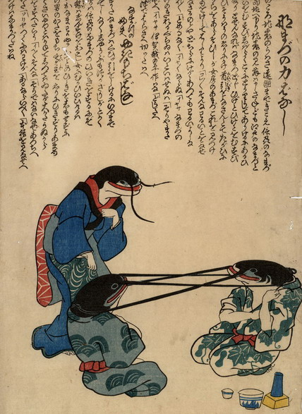

信州鯰と江戸鯰が、互いのひげを首に結わえて首引きをしている。それを女房の鯰が心配そうに見守っている。
出典：親書誌：U426_nichibunken_0208：なまづの力ばなし；ナマズノチカラバナシ，なまづの夫婦やきもちばなし；ナマズノフウフヤキモチバナシ／日付：2010／資源識別子：U426_nichibunken_0208_0001_0000
Copyright (c)2010- International Research Center for Japanese Studies, Kyoto, Japan. All rights reserved.